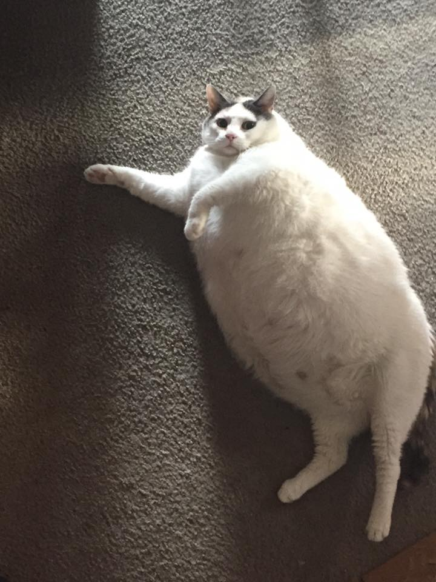
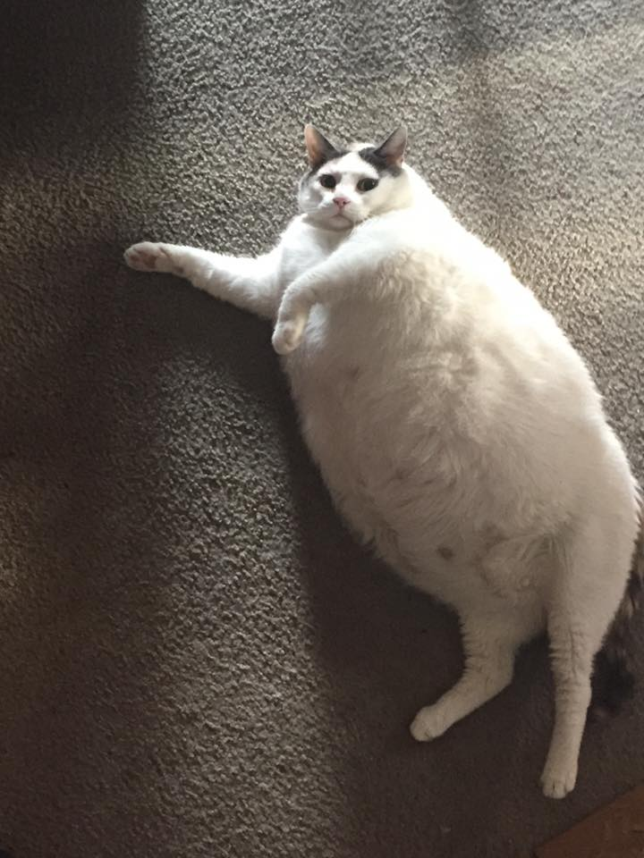

The cat (Felis catus) is a small carnivorous mammal.It is the only domesticated species in the family Felidae and often referred to as the domestic cat to distinguish it from wild members of the family.The cat is either a house cat, a farm cat or a feral cat; latter ranges freely and avoids human contact.Domestic cats are valued by humans for companionship and for their ability to hunt rodents. About 60 cat breeds are recognized by various cat registries. The cat is similar in anatomy to the other felid species, has a strong flexible body, quick reflexes, sharp teeth and retractable claws adapted to killing small prey. Its night vision and sense of smell are well developed. Cat communication includes vocalizations like meowing, purring, trilling, hissing, growling and grunting as well as cat-specific body language. It is a solitary hunter, but a social species. It can hear sounds too faint or too high in frequency for human ears, such as those made by mice and other small mammals. It is a predator that is most active at dawn and dusk.It secretes and perceives pheromones.
 

The real richasses are served and smoke weeds everyday